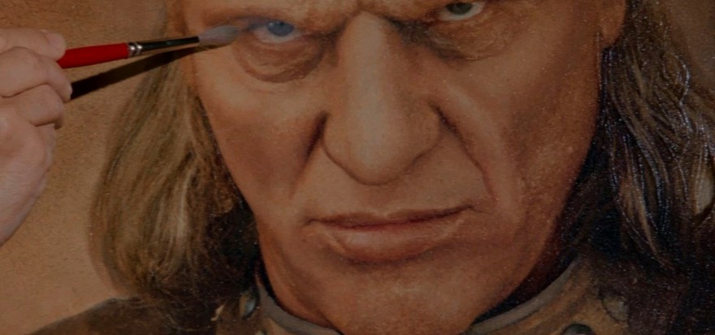

Upstairs in the restoration studio

Prince Vigo of Carpathia, 16th century, oil on canvas. Cleaning in progress for the winter show.
Come up after lunch and watch the old masters come back to life.
Janosz Poha
HEAD OF RESTORATION
SUPPER
Carpathian goulash6.10
Beef chuck braised slowly with sweet paprika, onions, caraway and tomato. Egg noodles, sour cream.
SWEETS AND DRINKS
Pink lemonade gelatin1.89
Set in a ring with raspberries. Wobbles when the band plays.
Pink lemonade cooler1.50
Poured over raspberry sorbet so it foams. Spoon and straw.
Hot cocoa, coffee or tea.95
Strollers please park at the coat check. Prices subject to change. Form MMA-1231, New York, 1989.
SLIME-FREE
KITCHEN